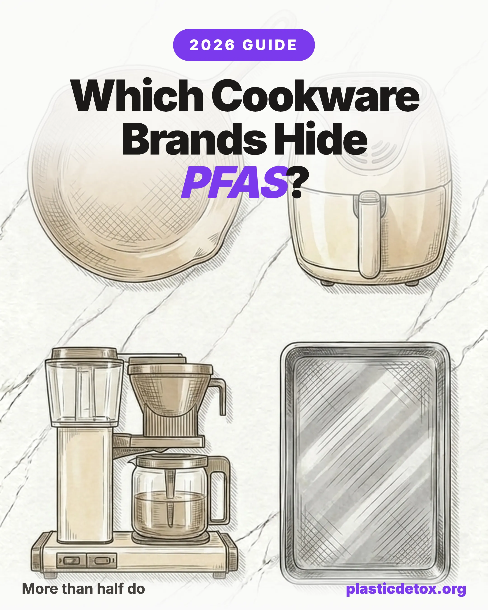

149 Cookware Brands Checked for PFAS. More Than Half Use It.

The 30 Second Summary
- You can finally look up your pans. The nonprofit Defend Our Health compiled PFAS disclosures for 200+ cookware brands. We built their data into a search tool right on this page, so you can check any brand in seconds.
- Of the 149 brands that gave a straight answer, more than half put PFAS in their cookware. 82 disclose intentionally added PFAS, 67 disclose none. (Another 61 filed disclosures too unclear to confirm.)
- A PFAS brand is not always off limits. Most only use PFAS on nonstick lines and still sell PFAS free stainless or cast iron. Check the exact model, and skip anything labeled nonstick.
- Confirmed PFAS free: Lodge, Field Company, Smithey, Stargazer, 360 Cookware, Heritage Steel, and Xtrema, among others.
- The safest bet costs $25: a Lodge Cast Iron Skillet is PFAS free by nature and lasts 100+ years. Bare cast iron, stainless, and carbon steel never need a chemical coating.
- Check any brand instantly in the search box below, updated with every cookware brand that filed a clear disclosure.
1. A Directory That Finally Exists
For years, the honest answer to "does my nonstick pan contain PFAS?" was a shrug. The information technically existed, but it was buried in legal disclosure pages that most shoppers never knew to look for.
That changed on July 21, 2026, when Defend Our Health, a Maine based nonprofit, released a free directory of PFAS disclosures for more than 200 cookware brands. Their team reviewed brand websites, pulled the legally required chemical disclosures, and recorded whether each company admits to intentionally adding PFAS forever chemicals to its pots, pans, air fryers, coffee makers, and muffin tins. We took that data and turned it into the searchable tool on this page. Their two decades of policy work made it possible, so if this helps you, consider supporting Defend Our Health.
The disclosures themselves come from a California law called AB 1200. Since 2023, it has required cookware makers to publish online whether they intentionally use PFAS, lead, arsenic, or formaldehyde. The catch, as Defend Our Health put it, was that "most consumers, and even regulators from other states, didn't know where to find them." The formats varied, the fonts were sometimes tiny, and the product listings were nearly impossible to decode without knowing the chemistry.
2. More Than Half of Cookware Brands Use PFAS
Defend Our Health went through the disclosure status for 210 cookware brands. Of those, 149 gave a clear yes or no answer. Here is what that clear-answer group looks like.
That is 82 out of 149, or more than half. Among the brands willing to state plainly what is in their pans, the majority put PFAS forever chemicals in at least one product line, and the list includes household names you would recognize. A further 61 brands filed disclosures that were missing, broken, or too cryptic to confirm, which is its own kind of answer.
The more hopeful half of the story: plenty of brands make equivalent products with no PFAS at all, often at the same price. As Defend Our Health's executive director Emily Carey Perez de Alejo put it, "we also found that many brands make equivalent products that are affordable and free of these chemicals." You are not choosing between PFAS or nothing. You are choosing between two pans that cost about the same, and only one of them coats your food in forever chemicals.
Check your cookware brand
Type any cookware, air fryer, or coffee maker brand for a straight answer based on its own PFAS disclosure. Loading…
Searching every cookware brand with a clear PFAS disclosure. Want other categories? Use the full Product Check.
3. How the States Fit Together
The reason this directory works at all is that four or five states each hold a different piece of the puzzle, and stitched together they cover the whole country.
| State | What its law does |
|---|---|
| California | Requires public disclosure of intentionally added PFAS (and lead, arsenic, formaldehyde) in cookware, but does not ban the sale. |
| Maine | Banned the sale of cookware with intentionally added PFAS as of January 1, 2026. |
| Minnesota | Bans the sale of PFAS cookware. |
| Colorado | Bans the sale of PFAS cookware. |
| Connecticut | Has an upcoming public reporting deadline for PFAS in cookware. |
California knew which products contained PFAS but did not ban them. Maine, Minnesota, and Colorado banned the sale but did not have the product level data. By connecting California's disclosures to the sale bans, the nonprofit turned a patchwork into a resource that helps shoppers everywhere, "not just within their borders but nationwide."
There is a practical takeaway even if you live nowhere near these states. In Perez de Alejo's words: "For consumers in states that do not yet prohibit the sale of cookware that contains PFAS, knowledge is power. These disclosures give consumers the option to opt out of PFAS cookware." For the full regulatory timeline of the sale bans rolling out through 2026 and 2027, see our cookware materials comparison.
4. Brands That Disclose PFAS
These are brands that, in their own AB 1200 disclosures, admit to intentionally adding PFAS to at least one product line. Most of them are nonstick lines, and many of these companies also sell PFAS free stainless steel or cast iron. The disclosure tells you which specific products to skip.
- All-Clad (nonstick lines)
- Anolon
- Ayesha Curry
- Ballarini
- Beautiful by Drew Barrymore (air fryers, skillets)
- Calphalon
- Circulon
- Cosori (air fryers)
- Cuisinart (nonstick)
- Dash
- De'Longhi
- Elite Gourmet
- Farberware
- Hamilton Beach
- Hestan (Titum nonstick)
- Instant Pot (Vortex air fryers)
- KitchenAid
- Le Creuset (nonstick)
- Made In (nonstick)
- Mauviel 1830 (nonstick)
- Ninja (2024 or earlier models)
- Nordicware (some models)
- Rachael Ray
- ScanPan
- Swiss Diamond
- T-Fal
- Tramontina (nonstick)
- Viking
- Zwilling / Staub (some items)
A handful of brands disclose that essentially all of their cookware may contain PFAS, including Tasty, Goodful, Paris Hilton Cookware, Ecolution, and several private labels. Those are flagged as skip outright. This list is a sample; look up any specific brand in the search tool above for the full detail, including the exact lines named in each disclosure.
5. Brands That Disclose No PFAS
These brands disclose no intentionally added PFAS in their cookware. Bare cast iron, stainless steel, and carbon steel makers dominate the list, because those materials never needed a chemical coating in the first place.
- 360 Cookware
- Brooklyn Copper Cookware
- Field Company
- Finex
- Heritage Steel
- Lodge
- Misen
- Nest Homeware
- Ruffoni
- Santa Barbara Forge
- Smithey
- Solidteknics
- Stargazer
- Vermicular
- Xtrema (see caveat)
A second group discloses no PFAS but relies on a ceramic or coated nonstick surface: Caraway, GreenPan, GreenLife, Our Place, Great Jones, Gotham Steel, Granitestone, Blue Diamond, and HexClad. These are a genuine step up from PFAS, but the coating typically wears down within one to three years, and once it degrades you are replacing the pan. They are marked "careful" rather than "good," because a bare cast iron or stainless pan is both PFAS free and lasts a lifetime.
6. The Ones You Cannot Confirm
The single largest group, 61 brands, had disclosures that could not be located or read clearly. Some pages were missing, some auto forwarded to broken links, and some listed only cryptic product ID codes. Notable names here include Amazon Basics, Martha Stewart, Paula Deen, Corelle and CorningWare, Oster, Crock-Pot, Black & Decker, and Pyrex.
"Unclear" is not an accusation. In some cases the company may genuinely use no PFAS and simply files a poor disclosure. But a PFAS free claim you cannot find is a claim you cannot verify, so these brands are best treated with caution. If you own one, check the brand's disclosure page directly, and when buying new, favor a brand whose PFAS free status is confirmed.
Encouragingly, Defend Our Health reported that when they contacted companies about PFAS items still shipping to ban states, "most of the companies updated their websites very quickly, some within just a few hours." As disclosures improve, some of these unclear brands will move firmly into one column or the other.
7. How to Read a Disclosure
If you want to check a specific pan yourself, here is what to look for.
- Find the brand's chemical disclosure page. Search the brand name plus "AB 1200" or "California chemical disclosure." Or skip the hunt and use the search tool on this page for an instant verdict.
- Match your exact model. Many brands sell the same pan in a PFAS and a PFAS free version, distinguished only by a letter at the end of the model number. The name alone is not enough.
- Learn the aliases. PFAS hides behind PTFE, PFA, FEP, "fluoropolymer," and coating brand names like Teflon, Titum, Stratanium, and Eterna. All are PFAS.
- When in doubt, choose bare metal. If a disclosure is missing or confusing, an uncoated cast iron, stainless, or carbon steel pan sidesteps the question entirely.
8. The Simplest PFAS Free Swaps
You do not need to memorize 210 brands. Two uncoated pans replace almost everything nonstick in a normal kitchen and never carry a PFAS disclosure, because there is no coating to disclose. Here are our picks, ordered from lowest to highest price tier.

Lodge Cast Iron Skillet (12")
Bare cast iron, pre seasoned with vegetable oil. Made in USA, oven safe to any temperature, no coating to shed. Discloses no PFAS.
View →
Tramontina Tri Ply Stainless (12")
18/10 stainless steel with aluminum core, no coating. Dishwasher safe, non reactive to acidic foods, oven safe to 500°F. Choose the uncoated tri ply line, not Tramontina nonstick.
View →
De Buyer Carbon Steel (12.5")
99% iron, 1% carbon, no coating. Made in France. Half the weight of cast iron, builds a natural nonstick patina with seasoning.
View →
Lodge Enameled Dutch Oven (6 Qt)
Enameled cast iron, no seasoning and no nonstick coating. Oven safe to 500°F. Enameled line tests below California Prop 65 lead and cadmium thresholds.
View →For the full breakdown of how these three materials compare on safety, price, and durability, read our cast iron vs stainless vs carbon steel guide. And since air fryers and coffee makers show up all over the PFAS list, it is worth checking your kitchen appliances, ranked by leaching risk, next.
9. Frequently Asked Questions
How do I find out if my cookware brand uses PFAS?
Under California's AB 1200 law, cookware makers must publish online whether they intentionally add PFAS, lead, arsenic, or formaldehyde. Defend Our Health compiled these hard to find disclosures for more than 200 brands. You can type any brand into the search tool on this page for an instant PFAS verdict.
Does a PFAS disclosure mean every pan from that brand contains PFAS?
No. Most brands that disclose PFAS only use it on their nonstick lines, and the same company often sells PFAS free stainless steel or bare cast iron pieces. The disclosure tells you which specific products to avoid, not that the whole brand is off limits. Always check the exact model, and skip anything labeled nonstick unless it is confirmed PFAS free.
Is PFAS cookware banned?
Maine banned the sale of cookware with intentionally added PFAS on January 1, 2026. Minnesota and Colorado have also banned it from sale, and Connecticut has a public reporting deadline. California requires public disclosure of PFAS in cookware but does not ban the sale. There is no federal ban yet, so in most states the choice is still up to the consumer.
Which cookware brands are confirmed PFAS free?
In the disclosures Defend Our Health reviewed, brands that disclose no intentionally added PFAS include Lodge, Field Company, Smithey, Stargazer, 360 Cookware, Heritage Steel, and Xtrema, among others. Bare cast iron, stainless steel, and carbon steel are PFAS free by nature. Ceramic coated brands like Caraway and GreenPan disclose no PFAS but rely on a coating that wears down over a few years.
What is California AB 1200?
AB 1200 is a California law that, since 2023, requires companies selling cookware such as pots, pans, air fryers, coffee makers, and muffin tins to disclose online whether they intentionally add certain hazardous chemicals, including PFAS, lead, arsenic, and formaldehyde. The disclosures are legally required but were often buried and hard to locate until Defend Our Health compiled them.
Are ceramic nonstick pans a safe alternative?
Ceramic coated pans are usually PFAS free, which makes them better than Teflon. But the sol gel ceramic coating wears down in one to three years, and once it degrades you lose the nonstick benefit and are back to buying another pan. For a surface that is both PFAS free and lasts a lifetime, choose bare cast iron, stainless steel, or carbon steel.
California AB 1200 Cookware Chemical Disclosure Requirements (OEHHA)
UNC Study: Cookware Contributes to PFAS Exposure (NC Health News)
Lead Safe Mama: XRF Testing of Pure Ceramic Cookware (Tamara Rubin)
Related Articles
- Cast Iron vs Stainless vs Carbon Steel Cookware
The full comparison of the three PFAS free materials, with the state ban timeline. - What Are PFAS Forever Chemicals?
Why this class of chemicals matters, and where they hide in daily life. - Toxic Kitchen Appliances, Ranked by Leaching Risk
Air fryers, coffee makers, and blenders ranked by what they leach into your food. - Best Non Toxic Air Fryers
Air fryers show up all over the PFAS list. Here are the PFAS free ones. - How to Start Reducing Plastic Exposure
A practical priority guide for reducing plastic in your daily routine.